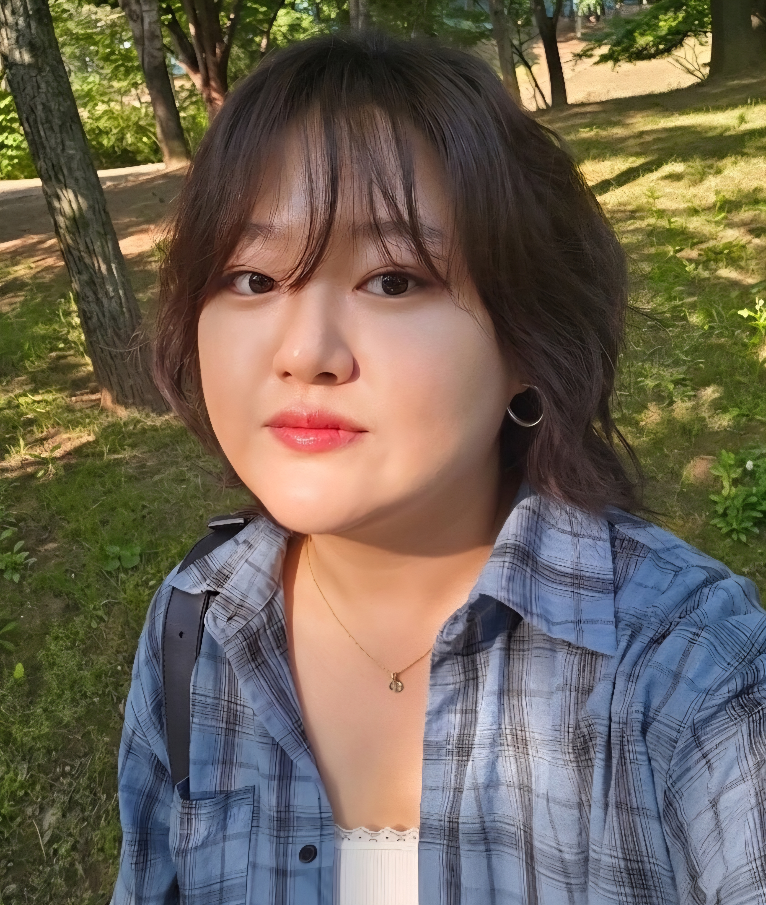

"공감과 소통으로 기획하고 제작하는 디자이너 이예진입니다."
사용자가 원하는 서비스와 제작자에게 필요한 아이템을 파악하여,
다양한 디자인을 제공할 수 있는 디자이너가 되기 위해 노력하겠습니다.
Contact Me
About Me
Career
4+ years Web Designer
2021 - 2026
Position
Design & Production Team
Junior Designer
work experience
◉ KMEC2026 의학교육학술대회 비주얼 브랜딩 및 그래픽 디자인
• 기간: 26.01 ~ 26.02
• 역할 및 기여도: 메인 그래픽/브랜딩 디자이너 (다사 경쟁 시안 중 최종 채택, 기여도 100%)
• 사용 툴: Generative AI (Gemini), Illustrator
• 프로젝트 배경 및 목적
- 한국의학교육학회 주최 ‘KMEC 2026’의 성공적인 개최를 위해 대회의 핵심 가치인 '미래 의학교육을 여는 리더십'을
시각화한 키 비주얼(Key Visual)을 수립하고, 행사 전반에 사용되는 오프라인 에셋을 통합 브랜딩하고자 함.
- 여러 디자인 업체와 디자이너가 참여한 시안 경쟁에서 학술대회의 미래지향적인 아이덴티티와 개최지(수원)의 상징성을 가장 완성도 높게 결합하여 최종 디자인으로 선정됨.
• 주요 수행 업무
1. 생성형 AI(Generative AI)를 활용한 디자인 프로세스 혁신:
- 디자인 기획 초기 단계에서 생성형 AI(Gemini)를 워크플로우에 적극 도입하여 추상적인 콘셉트를 빠르게 시각화하고 시안 도출 기간을 단축함.
- AI가 도출한 1차 콘셉트 에셋을 기반으로 Adobe Illustrator를 활용해 정교한 벡터 그래픽 수정, 레이아웃 커스텀, 타이포그래피 정렬,
정밀한 컬러 보정 작업을 거쳐 상용 디자인 수준으로 고도화함.
2.행사 정체성을 담은 키 비주얼(Key Visual) 리드:
- 개최지인 '수원 컨벤션센터'의 상징성을 더하기 위해 하단부에 수원의 역사적 랜드마크(화성 팔달) 모티프 라인 아트를 세련되게 매칭하여 독창적인 비주얼 컴포지션 완성.
3.OSMU(One Source Multi Use) 방식의 통합 브랜딩 전개:
- 최종 채택된 메인 포스터 디자인을 기반으로 행사장에 배치되는 현수막, X배너, 무대 백드롭(Backdrop)부터 참가자용 브로슈어 및 안내 책자까지
모든 온·오프라인 에셋으로 디자인 시스템을 확장 전개.
• 주요 성과
1. 크리에이티브 경쟁력 입증:
- 경쟁 프로세스에서 독창성과 학회 정체성 해석 능력을 인정받아 최종 메인 디자이너로 선정 및 프로젝트 총괄 성공.
2.효율적인 업무 프로세스 수립:
- 생성형 AI와 그래픽 툴의 유기적인 협업 프로세스를 통해 디자인 퀄리티는 극대화하면서 작업 공수를 획기적으로 절감함.